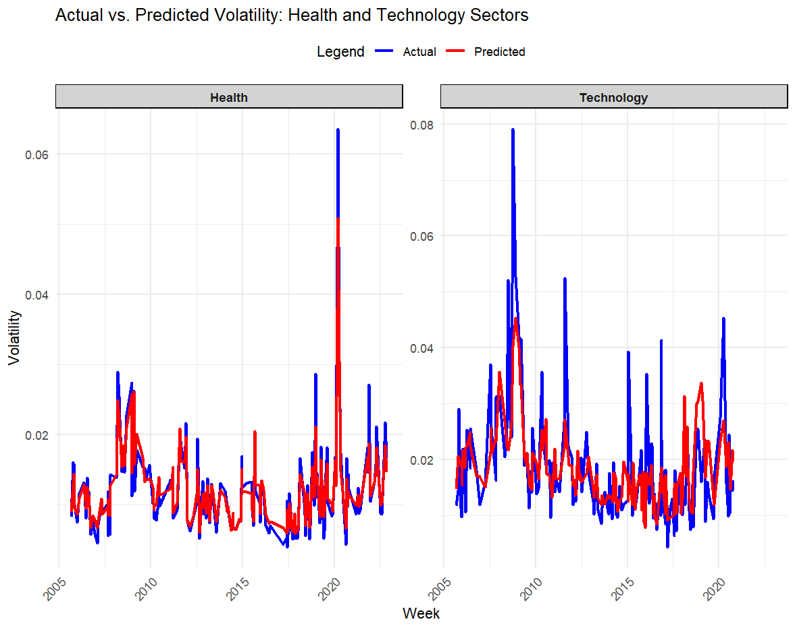

Introduction
This project investigates the key drivers of weekly stock price volatility in the Health and Technology sectors. By leveraging composite visualizations, the project addresses questions related to temporal volatility patterns, feature relationships, and predictive modeling performance. Key findings provide insights into sectoral differences, emphasizing the role of technical indicators and trading behavior in driving volatility.
Composite Visualization
-
1. Weekly Volatility Trends
.png)
-
2. Correlation Heatmap

-
3. Volume vs. Volatility Scatter Plot

-
4. Feature Importance Chart
-
5. Actual vs. Predicted Volatility Chart

Key Messages
- Temporal Patterns: The Technology sector shows heightened volatility during economic crises, while the Health sector demonstrates stability, acting as a defensive asset.
- Feature Relationships: Technical indicators such as ATR and trading volume are critical predictors, with sectoral nuances influencing their impact.
- Predictive Modeling: Random Forest models effectively capture volatility patterns, though extreme events remain challenging to predict.

Code
Access the Python scripts here.
Instructions
Clone the repository: git clone https://github.com/yourusername/INF4000
Install Python dependencies: pandas, scikit-learn, matplotlib.
Run the scripts as per the instructions in the README.